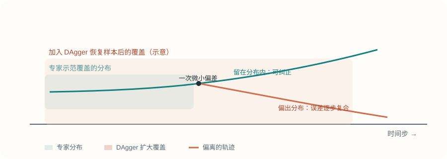
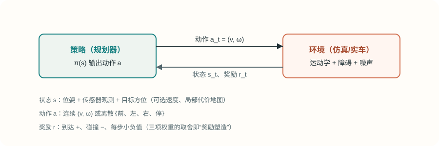

学习型路径规划：模仿、强化与混合架构，各自能解决什么、不能解决什么
前面所有算法的“智能”都是人写进去的：启发式、代价、采样策略都要手工设计。学习型方法想把这部分交给数据。但“让算法自己学会规划”远没有宣传里那么通用——理解它的两类范式与两类失败模式，比会用某个库更重要。
经典方法欠缺的是什么
在引入学习之前，先诚实地说清经典方法的局限——注意：这些局限并不说明它们该被替代。A*、Dijkstra、RRT、DWA 仍然是工业界的主力，学习型方法大多是叠加在它们之上，而不是完全替换。
- 手工启发式：启发式函数需要先验。开阔场景用欧氏距离合适，方格约束强时用对角距离更紧，但混合场景只能取折中。设计不当会造成搜索效率下降。
- 参数敏感且耦合：采样步长、目标偏置概率、碰撞检测阈值相互耦合，换一张地图可能需要重新调。没有“一劳永逸”的参数。
- 不积累经验：经典规划器每次从零计算，上一张地图解过的问题不会帮助下一张地图。学习型方法的核心卖点正是：把重复场景里的规律压进参数。
因此，学习型方法适合的场景是：同类规划任务高频重复、环境有可学习的规律、且手工调参成本过高。反过来，一次性、高安全要求、必须形式化保证的场景，经典方法依旧占优。
模仿学习与分布偏移
最直接的学习方式是模仿学习（也称行为克隆，Behavior Cloning）：先用 A* 或人类专家在大量地图上跑出轨迹，把 (状态, 动作) 对收集起来，再用监督学习训练一个策略网络 π(s) → a。这一思路可追溯到 Pomerleau 1988 年的 ALVINN：用神经网络直接从道路图像回归方向盘转角。
它的问题不在拟合能力，而在分布偏移与误差复合：训练数据来自专家轨迹，策略一旦在部署时因微小扰动偏出专家分布，它遇到的就是从未见过的状态；而从未见过的状态又会带来更大的偏差，于是误差逐步放大。用一句话概括：训练时只见过“状态”，没见过自己犯错之后的状态。
LEARNING · 26

Ross、Gordon 与 Bagnell 在 2011 年提出的 DAgger（Dataset Aggregation，数据集聚合）直指这一问题：让当前策略去跑，专家对这些新访问到的状态给出应该采取的动作，把新样本不断并入训练集。它把“单调监督”变成了“在策略访问到的状态分布上监督”，代价是训练期间必须能持续得到专家标注。
强化学习路径规划
若说模仿学习是“抄答案”，强化学习就是把路径规划建模成一个马尔可夫决策过程（MDP），靠与环境交互的奖励信号来学，不需要专家示范。
LEARNING · 26

训练算法上，PPO（Proximal Policy Optimization，Schulman 等 2017）因为稳定性与实现简单而常被选用；连续控制任务中它与 SAC、TD3 是常见选择。但无论用哪个算法，最容易出问题的地方是奖励塑造：
- 稀疏奖励：只在到达时给分。信号稀少、学习慢，但在稀疏地形中不容易诱导错行为。
- 稠密奖励：每步都用“离目标更近”打分。学习快，但容易奖励劫持（reward hacking）——策略发现“原地往复振荡也能累积靠拢奖励”这类捷径，从而不真正到达目标。
奖励函数的权重不是超参数里无关紧要的一项，它是在用数值定义“什么叫好路径”。下一节的交互就是围绕这一点。
混合架构
学界与工程界的共识逐渐清晰：纯学习型与纯经典各有短板，混合架构往往是当前更稳的选择。最流行的模式是“经典全局规划 + 学习型局部控制”：全局规划器负责在高层找到一条无碰撞的粗略路径（这需要完备性与可解释性，经典方法擅长），学习型策略负责在局部跟随路径并应对动态障碍（这需要快速反应与适应性）。
另一种常见的混合方式更轻：不让学习去替代规划器，而是用学习去改经典算法的内部环节——例如学习启发式函数的权重、引导采样方向、或在冗余自由度上做优化。这类“学习作为组件”的风险远低于端到端。
混合架构之所以有效，主要有四个原因：
- 搜索空间被压缩：全局路径给出“大致方向”，局部策略只在管道内微调，而不必从头探索整个状态空间。
- 安全有兜底：即使学习策略在分布外状态上失稳，全局路径仍提供一个可恢复的基线。
- 可归因：出问题时可以问“是全局选错了路径，还是局部执行失误？”——这种归因能力端到端系统没有。
- 数据效率更高：局部策略只需学“如何微调”，不需要学“如何从零找路”。
| 维度 | 经典方法 | 纯深度 RL | 混合架构 |
|---|---|---|---|
| 安全性 | 高（可形式化分析） | 低（无形式保证） | 较高（全局兜底） |
| 对未见过环境的适应 | 低（需重新调参） | 训练分布内高、分布外差 | 中（局部可适应） |
| 计算代价 | 中等 | 推理低、训练极高 | 全局规划 + 推理 |
| 可解释性 | 高 | 低（黑箱） | 中高 |
| 部署风险 | 低 | 高（sim-to-real） | 中 |
已有的代表性工作包括 Faust 等 2018 年的 PRM-RL（用 PRM 构建路线图、用 RL 学局部导航，两者结合）与 Codevilla 等 2018 年的条件模仿学习（让驾驶策略根据高层指令切换行为）。它们共同的特点是：学习模块都有经典结构在旁约束。
纯 DRL 为何尚未规模部署
深度强化学习在 2016 年后被寄予厚望，但到今天，纯 DRL 路径规划在实验室之外的大规模部署依旧很少。原因不是“效果不好”，而是以下四个硬障碍：
- sim-to-real 鸿沟：仿真中训练的策略迁移到现实常发生退化（见上一章）。域随机化可缓解但不能根除，而且现实中总可能出现分布外的光照、噪声与地面条件。
- 缺乏行为保证：经典算法可以给出完备性或最优性的论证，而神经网络策略只是一个训练好的函数，没有“一定不会撞”的形式保证。对神经网络做完整形式验证的规模仍有限，安全关键系统还不能完全依赖它。
- 可解释性：当车辆做出反直觉决策时，经典规划器可以查搜索日志，而纯策略只能回答“网络说如此”。这直接影响合规与事故归因。
- 基准碎片化：每个团队用自己的仿真器、地图集与指标，导致同一方法在 A 团队惊艳、在 B 团队一败涂地，很难形成“什么真正有效”的共识。
看到“我们的 RL 规划器超过 A*”这类结论时，先问三件事：训练环境与测试环境是否同分布？评估指标除了成功率有没有安全指标？基线是否被公平调参？ 缺少这三项中的任何一项，结论都不可直接采信。
但这不意味着 RL 没有价值。它最有前景的定位是作为经典框架内的辅助模块：调启发式权重、在探索阶段引导采样、在冗余自由度上做优化。把 RL 嵌入经典算法，而不是指望它替代经典算法，是当下更现实的路线。
交互：奖励权重决定“最优行为”
下面有三条候选轨迹，都能到达目标，但代价不同（均为教学示意数值）：直冲只需 8 步、离障碍仅 0.04 m；折中 10 步、间隙 0.20 m；绕行 12 步、间隙 0.35 m。评分为
切换权重，看哪条轨迹评分最高。同一个“到达目标”的任务，权重的不同会让评分最高的轨迹在“直冲”与“绕行”之间翻转——这正是“奖励即价值定义”。
重速度：最高分是“直冲”。
数值已简化，仅用于说明权重翻转选择方向，不是任何训练的实测奖励。
可运行的误差复合示例（Python 3.10+）
下面用一个一维最小模型把“分布偏移导致误差复合”写成可验证的断言。动力学为 x' = a·x + u，策略为 u = −g·x + b；专家策略使系统收敛，学生只差一个极小偏置 b，或根本没学到有效反馈。存成 bc_demo.py，运行 python3 bc_demo.py。
# 教学示意：行为克隆“误差复合”的一维最小模型（Python 3.10+）
def rollout(gain, bias, a=1.05, T=100, x0=1.0):
x = x0
for _ in range(T):
u = -gain * x + bias # 学到的策略
x = a * x + u # 一维动力学 x' = a*x + u
return x
expert = rollout(0.10, 0.0) # 精确学到专家策略
good = rollout(0.10, 0.02) # 只差一个极小偏置
broken = rollout(0.00, 0.0) # 根本没学到有效反馈
assert abs(expert) < 0.01
assert abs(good - 0.40) < 0.05
assert abs(broken) > 100.0
print(f"expert={expert:.3f} biased={good:.3f} broken={broken:.1f}")
# 输出：expert=0.006 biased=0.404 broken=131.5
三个结果指向同一个事实：误差的后果不取决于误差的大小，而取决于它被反馈回路放大还是抑制。这里 a=1.05 略大于 1。偏置 0.02 只造成 0.4 的稳态偏移；而一旦有效反馈丢失（gain=0），系统自身的 1.05 就发散到 131.5。这正是行为克隆“误差复合”的最小机制，也是 DAgger 存在的理由。该模型是教学示意，不对应任何具体机器人。
边界条件
- 泛化只对训练分布成立：学习型策略在测试分布与训练分布不同时退化；“在测试集上表现好”不等于在现实世界中可靠。
- 奖励设计就是行为规范：只优化“到达”而不惩罚贴障与振荡，策略就可能学会危险或低效的行为；评估时不能只看成功率，还需安全指标（最小间隙、碰撞率、急动）。
- 模仿学习需要专家：BC 依赖专家示范，DAgger 还要求训练期可交互地得到专家标注；两者都无法“无中生有”。
- 混合架构不是免费午餐：全局与局部模块的接口（前瞻点、切换条件）仍需手工设计与验证，接口错了照样出事故。
- 形式保证仍缺位：神经网络策略没有像 A* 完备性那样的一般性保证；对大型网络做完整形式验证的规模仍有限，安全关键系统不能完全依赖它。
不要把“某个仿真基准上的排名”当成部署结论。一个可交付的判断至少应包含：训练与测试分布的描述、奖励函数全文、评估用的安全指标、以及基线是否被公平调参。
原始来源
- Pomerleau (1988), ALVINN: An Autonomous Land Vehicle in a Neural Network, NIPS 1988——行为克隆的直接源头。
- Ross, Gordon & Bagnell (2011), A Reduction of Imitation Learning and Structured Prediction to No-Regret Online Learning, AISTATS——DAgger，针对分布偏移的数据集聚合。
- Schulman et al. (2017), Proximal Policy Optimization Algorithms——PPO。
- Faust et al. (2018), PRM-RL: Long-range Robotic Navigation Tasks by Combining a Robotic Roadmap with Reinforcement Learning, ICRA——经典路线图与 RL 结合的混合架构。
- Codevilla et al. (2018), End-to-end Driving via Conditional Imitation Learning, ICRA——条件模仿学习。
- 本章式 26-1、两幅图与交互均为教学示意，不是任何训练的实测数据。